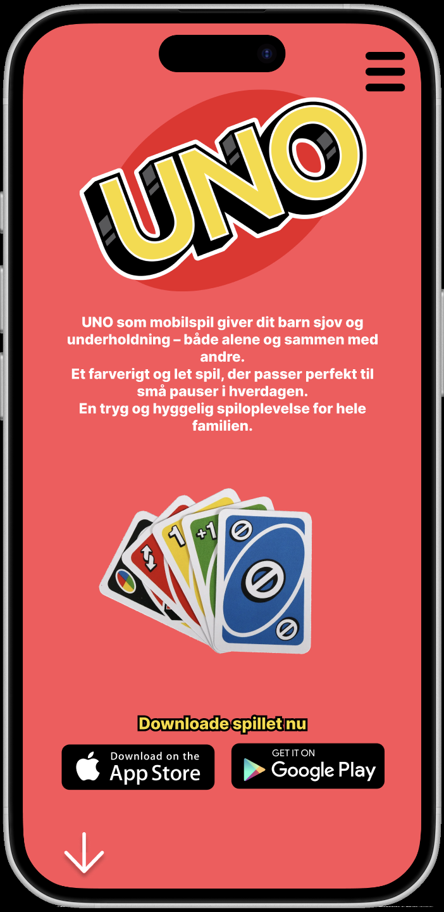
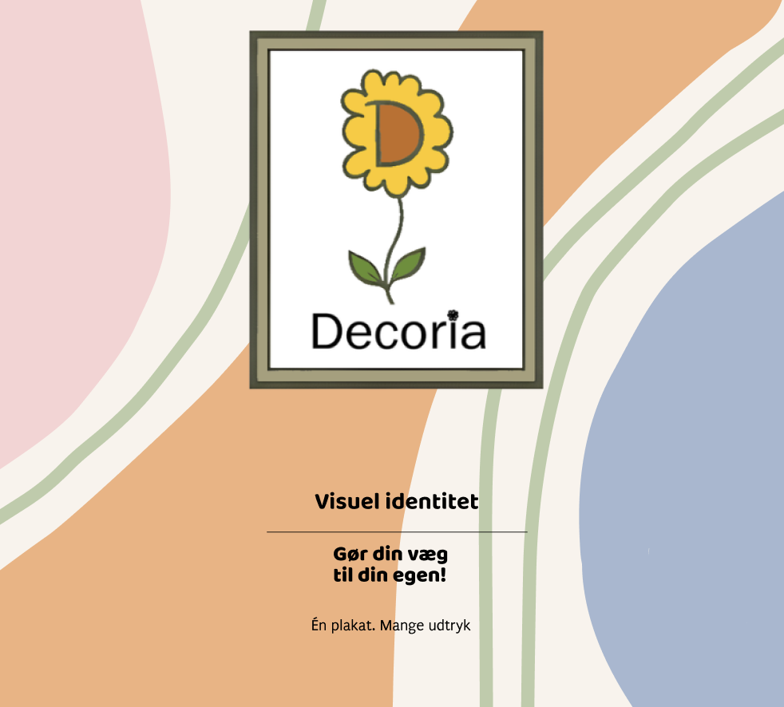
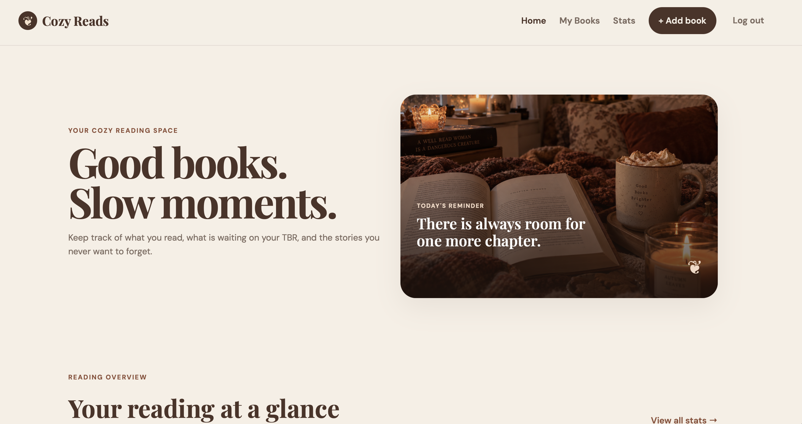
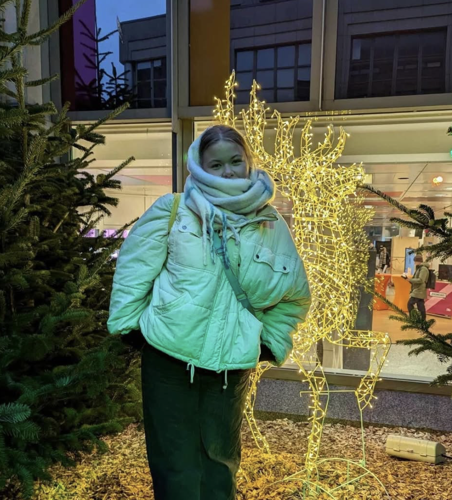

UNO
Web development
Creating thoughtful digital experiences where design, functionality
and usability come together
Here are a selection of the projects I’ve worked on since starting my Multimedia Design studies.

Web development

Visual identity

UI/UX design
Here are some pictures I have taken around the world for creative inspiration, memories or purely because I could see the beauty in it.
View more



I’m a Multimedia Design student with a strong interest in both design and development. I enjoy working across the creative process, from ideas and visual concepts to UI/UX design and development.
I focus on creating digital experiences that balance aesthetics, functionality and usability. I’m always curious to explore new tools, technologies and creative approaches while continuing to develop my skills.
Get to know me